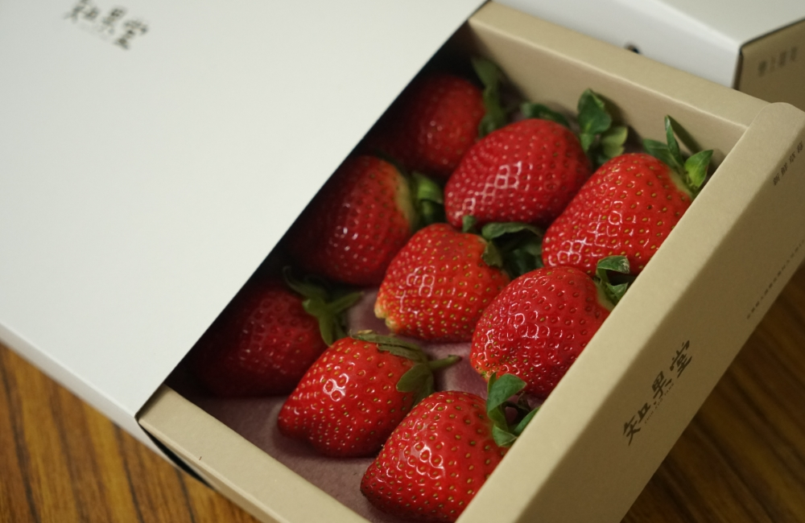
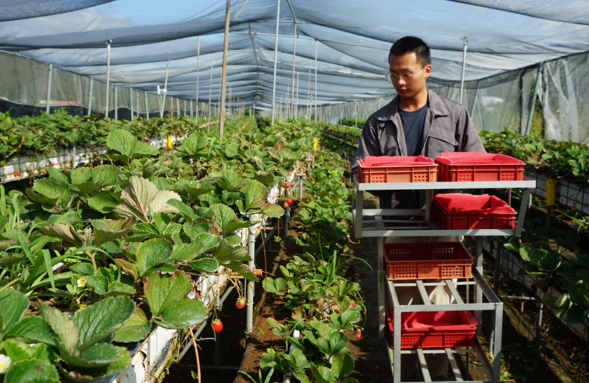

草莓
草莓的由來
台灣草莓在1934年從日本引進，一開始是在台北地區跟陽明山種植，剛開始成效不佳。在1958年由苗栗大湖農家帶回當地細心種植，終於開始慢慢的規模化，也開啟了『大湖＝草莓』的印象。而經典的豐香草莓就是在1985年引進台灣，經過改良後正式命名為『桃園一號』，曾經高踞9成以上的種植品種，但在2019年左右，產量開始大量衰退。

草莓的季節與種植區域
草莓屬於多年生草本植物，健康的植株通常可以活三年，但是結果率會逐漸變差。在台灣產地以苗栗為主，近年苗栗區域以外也有不少人種植，通常專業生產者會每年重新植苗，以維持較高的生長率與植株健康。
草莓苗會在每年入秋後的9-10月左右定植，11月左右開花，開花後30-40天可以採收，
，開花量通常就能判斷結果率，但開花期到結果這段時間氣候得宜才有可能量產，一旦下雨可能就會減收，說草莓是高度看天吃飯的作物一點都不為過。
而經常聽人說到草莓有『幾期』，就是草莓苗在長達半年的生產期中會有幾次開花期，而開花後的草莓果實，就被稱作『這是幾期花的果』，通常二期花產量最多、品質最佳，產季落在春節後。一般草莓苗一季約有3-4次的開花結果期，隨著氣候越來越不穩定，未來可能僅剩下2-3期。

草莓的品種
台灣最早期規模化栽種是豐香，風味濃郁、口感偏軟，是一款非常美味的草莓。隨著豐香抗病力變弱，逐漸被香水草莓所取代，香水草莓口感偏硬，味道酸甜，是目前台灣的主流品種。不過這幾年香水的抗病力也變差了，目前正在研發其他品種替代。台灣草莓跟日本草莓其實很類似，每隔數年就要推出新品種來取代抗病力逐年下降的舊品種。這點跟其他水果大異其趣，很多水果是越老欉越好，但是草莓反而是抗病力逐年衰退。
資料來源: